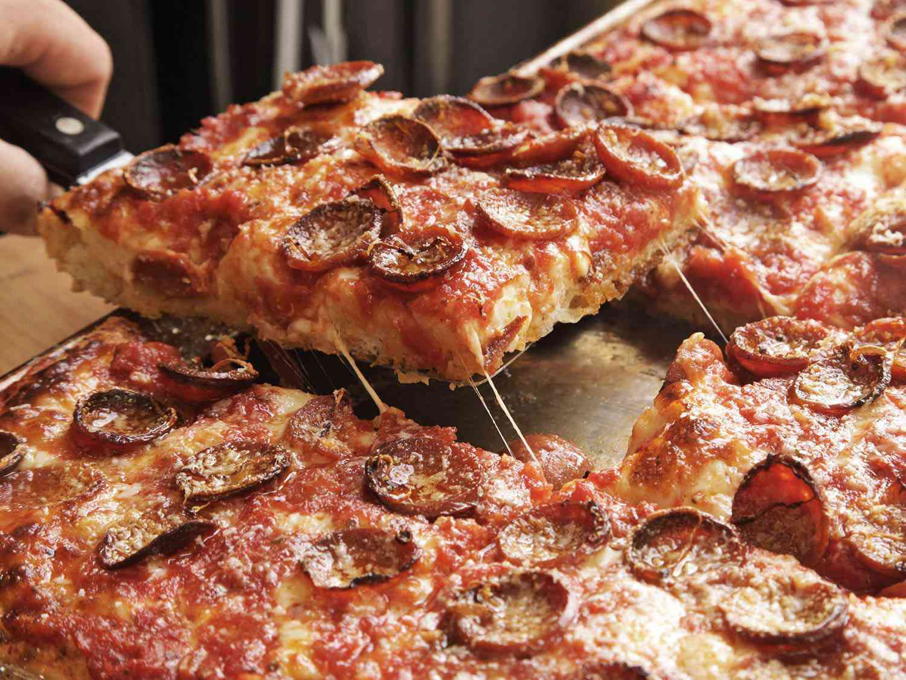

Sicilian Pizza

Description
Sicilian Pizza is a rectangular sheet tray pizza which creates a foccocia style dough
and toppings with the cheese on the bottom.
Ingredients
- Bread Flour - 500g
- Instant Yeast - 7g
- Cooking Salt - 14g
- Olive Oil - 60g
- Room Temp. Water - 325g
- Low Moisture Motzeralla - 500g
- Tinned Tomatoes - 800g
- Pepperoni - 300g
Steps
- Combine flour, yeast, salt, olive oil, and water in a bowl.
- Mix until a dough forms.
- Let the dough rest for 15 minutes.
- Stretch the dough to fit a sheet tray.
- Top with cheese, tomatoes, and pepperoni.
- Bake at 500 degrees for 15 minutes.
Back to Homepage